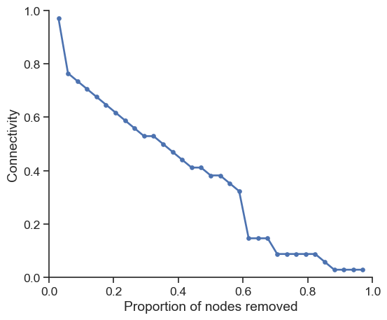
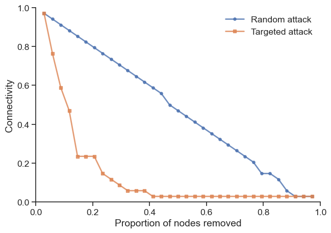
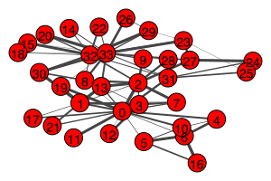
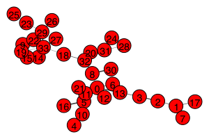
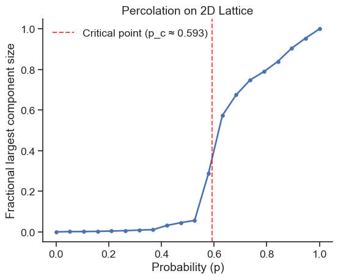
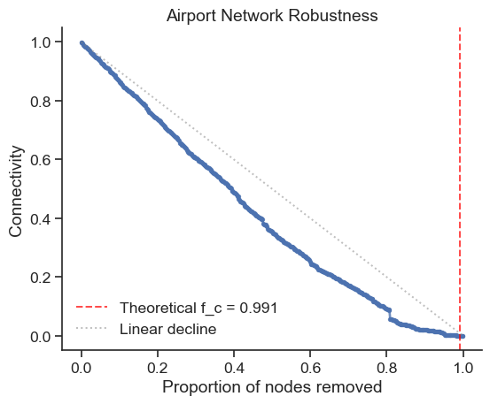

import igraph
# Create the famous Zachary's karate club network
g = igraph.Graph.Famous('Zachary')
# Visualize the network
igraph.plot(g, bbox=(300, 200), vertex_size=20, vertex_label=list(range(g.vcount())))
igraphNetwork robustness analysis focuses on understanding how networks behave when nodes or edges are removed, whether through random failures or targeted attacks. The Python ecosystem provides powerful tools for analyzing these phenomena:
Throughout this analysis, we’ll use igraph for its reliable implementations and performance advantages when working with connectivity measures and component analysis.
Installing igraph
# Using pip (with plotting support)
pip install igraph cairocffi
# Using conda (recommended)
conda install -c conda-forge igraph cairocffi
# Alternative plotting backend
pip install igraph pycairoNote: igraph requires compiled C libraries and plotting needs cairocffi or pycairo. Use conda for easier installation.
For advanced users comfortable with scipy, the csgraph submodule provides an excellent alternative that leverages one of Python’s most well-tested and optimized libraries. For example, csgraph.shortest_path and csgraph.connected_components offer high-performance implementations.
Let’s start by creating a network using the famous Zachary’s karate club, which provides an excellent testbed for robustness analysis:
import igraph
# Create the famous Zachary's karate club network
g = igraph.Graph.Famous('Zachary')
# Visualize the network
igraph.plot(g, bbox=(300, 200), vertex_size=20, vertex_label=list(range(g.vcount())))
About Zachary’s Karate Club
Zachary’s karate club is a famous network of 34 members of a karate club documenting friendships between members. The network is undirected and originally unweighted, making it an excellent testbed for robustness analysis.
Before analyzing robustness, let’s understand how to measure network connectivity. In network analysis, we often need to identify connected components:
components = g.connected_components()
print("Number of components:", len(components))
print("Component sizes:", list(components.sizes()))
print("Largest component size:", components.giant().vcount())Number of components: 1
Component sizes: [34]
Largest component size: 34The connectivity of a network is typically measured as the fraction of nodes in the largest connected component:
import numpy as np
def network_connectivity(graph, original_size=None):
"""Calculate network connectivity as fraction of nodes in largest component"""
if original_size is None:
original_size = graph.vcount()
if graph.vcount() == 0:
return 0.0
components = graph.connected_components()
return max(components.sizes()) / original_size
# Test the function
connectivity = network_connectivity(g)
print(f"Current connectivity: {connectivity:.3f}")Current connectivity: 1.000Now let’s explore how networks behave when nodes fail or are attacked systematically.

# If you are using Google Colab, uncomment the following line to install igraph
# !sudo apt install libcairo2-dev pkg-config python3-dev
# !pip install pycairo cairocffi
# !pip install igraphRandom attacks simulate random failures where nodes are removed with equal probability. Let’s implement a systematic approach:
import pandas as pd
def simulate_random_attack(graph):
"""Simulate random node removal and measure connectivity"""
g_test = graph.copy()
original_size = g_test.vcount()
results = []
for i in range(original_size - 1): # Remove all but one node
# Randomly select and remove a node
node_idx = np.random.choice(g_test.vs.indices)
g_test.delete_vertices(node_idx)
# Measure connectivity
connectivity = network_connectivity(g_test, original_size)
# Store results
results.append({
"connectivity": connectivity,
"frac_nodes_removed": (i + 1) / original_size,
})
return pd.DataFrame(results)
# Run the simulation
df_random = simulate_random_attack(g)Let’s visualize the robustness profile:
import matplotlib.pyplot as plt
import seaborn as sns
sns.set(style='white', font_scale=1.2)
sns.set_style('ticks')
fig, ax = plt.subplots(figsize=(6, 5))
ax.plot(df_random["frac_nodes_removed"],
df_random["connectivity"],
'o-', linewidth=2, markersize=4, label="Random attack")
ax.set_xlabel("Proportion of nodes removed")
ax.set_ylabel("Connectivity")
ax.set_xlim(0, 1)
ax.set_ylim(0, 1)
sns.despine()
plt.tight_layout()
plt.show()
Targeted attacks remove nodes based on specific criteria, such as degree centrality. High-degree nodes (hubs) often play crucial roles in network connectivity:
def simulate_targeted_attack(graph, criterion="degree"):
"""Simulate targeted node removal based on specified criterion"""
g_test = graph.copy()
original_size = g_test.vcount()
results = []
for i in range(original_size - 1):
# Remove node with highest degree
if criterion == "degree":
degrees = g_test.degree()
node_idx = g_test.vs.indices[np.argmax(degrees)]
g_test.delete_vertices(node_idx)
# Measure connectivity
connectivity = network_connectivity(g_test, original_size)
# Store results
results.append({
"connectivity": connectivity,
"frac_nodes_removed": (i + 1) / original_size,
})
return pd.DataFrame(results)
# Run targeted attack simulation
df_targeted = simulate_targeted_attack(g)Now let’s compare both attack strategies:
fig, ax = plt.subplots(figsize=(7, 5))
ax.plot(df_random["frac_nodes_removed"],
df_random["connectivity"],
'o-', linewidth=2, markersize=4, label="Random attack", alpha=0.8)
ax.plot(df_targeted["frac_nodes_removed"],
df_targeted["connectivity"],
's-', linewidth=2, markersize=4, label="Targeted attack", alpha=0.8)
ax.set_xlabel("Proportion of nodes removed")
ax.set_ylabel("Connectivity")
ax.set_xlim(0, 1)
ax.set_ylim(0, 1)
ax.legend(frameon=False)
sns.despine()
plt.tight_layout()
plt.show()
The comparison reveals a key insight: while networks are often robust against random failures, they can be vulnerable to targeted attacks on high-degree nodes.
Examine the degree distribution of the Zachary network and identify the nodes with highest degrees. 📊🔍
Create a visualization showing which nodes are removed first in the targeted attack. 🎯📈
Try implementing a targeted attack based on betweenness centrality instead of degree. How does it compare? 🌐⚡
Understanding network structure through minimum spanning trees can provide insights into network robustness. Let’s explore this concept:
import random
# Create a weighted version of our network for MST analysis
g_weighted = g.copy()
g_weighted.es["weight"] = [random.randint(1, 10) for _ in g_weighted.es]
# Visualize weighted network
igraph.plot(g_weighted, bbox=(300, 200),
edge_width=[w/3 for w in g_weighted.es["weight"]],
vertex_label=list(range(g_weighted.vcount())))
The minimum spanning tree represents the most efficient way to connect all nodes:
# Find minimum spanning tree
mst = g_weighted.spanning_tree(weights=g_weighted.es["weight"])
# Visualize the MST
igraph.plot(mst, bbox=(300, 200),
edge_width=[w/3 for w in mst.es["weight"]],
vertex_label=list(range(mst.vcount())))
The MST identifies the most critical connections for maintaining network connectivity, which relates directly to robustness analysis.
Network robustness can be viewed as the inverse process of percolation. In percolation theory, we study how connectivity emerges as we randomly add nodes to a network.
def percolation_simulation(lattice_size=100, p_values=None):
"""Simulate percolation on a 2D lattice"""
if p_values is None:
p_values = np.linspace(0, 1, 20)
# Create 2D lattice
g_lattice = igraph.Graph.Lattice([lattice_size, lattice_size],
nei=1, directed=False,
mutual=False, circular=False)
results = []
for p in p_values:
# Randomly keep nodes with probability p
keep_nodes = np.where(np.random.rand(g_lattice.vcount()) < p)[0]
if len(keep_nodes) > 0:
g_sub = g_lattice.subgraph(keep_nodes)
largest_size = network_connectivity(g_sub, g_lattice.vcount())
else:
largest_size = 0
results.append({"p": p, "largest_component_fraction": largest_size})
return pd.DataFrame(results)
# Run percolation simulation
df_percolation = percolation_simulation(lattice_size=50)fig, ax = plt.subplots(figsize=(6, 5))
ax.plot(df_percolation["p"],
df_percolation["largest_component_fraction"],
'o-', linewidth=2, markersize=4)
# Mark theoretical critical point for 2D lattice
critical_p = 0.593 # Theoretical value for 2D square lattice
ax.axvline(x=critical_p, color='red', linestyle='--', alpha=0.7,
label=f'Critical point (p_c ≈ {critical_p})')
ax.set_xlabel("Probability (p)")
ax.set_ylabel("Fractional largest component size")
ax.set_title("Percolation on 2D Lattice")
ax.legend(frameon=False)
sns.despine()
plt.tight_layout()
plt.show()
Phase Transition
The sharp transition around p_c demonstrates a phase transition - a sudden change from a disconnected to connected state as we cross the critical threshold.
Want to see this in action? 🌟 Check out this interactive simulation.
Play around with it and watch how the puddles grow and connect. 🌊
[Bernoulli Percolation Simulation 🌐](https://visualize-it.github.io/bernoulli_percolation/simulation.html) 🔗
Let’s explore robustness in real-world networks by analyzing data from Netzschleuder.
pandasigraphHint: For large networks, consider sampling node pairs to estimate average path length rather than computing all pairwise distances.
# Your implementation hereLet’s analyze a more complex real-world network to see robustness principles in action:
# Load airport network data
df_airports = pd.read_csv("https://raw.githubusercontent.com/skojaku/core-periphery-detection/master/data/edge-table-airport.csv")
# Process edge data
edges = df_airports[["source", "target"]].to_numpy()
edges = np.unique(edges.reshape(-1), return_inverse=True)[1]
edges = edges.reshape(-1, 2)
# Create network
g_airports = igraph.Graph()
g_airports.add_vertices(np.max(edges) + 1)
g_airports.add_edges([tuple(edge) for edge in edges])
print(f"Airport network: {g_airports.vcount()} nodes, {g_airports.ecount()} edges")Airport network: 2905 nodes, 30442 edgesThe Molloy-Reed criterion provides a theoretical framework for predicting network robustness:
# Calculate degree statistics
degrees = np.array(g_airports.degree())
k_mean = np.mean(degrees)
k_squared_mean = np.mean(degrees**2)
# Molloy-Reed criterion: kappa_0 > 2 for giant component
kappa_0 = k_squared_mean / k_mean
print(f"κ₀ = <k²>/<k> = {kappa_0:.3f}")
# Critical fraction for network breakdown
f_c = 1 - 1 / (kappa_0 - 1)
print(f"Predicted critical fraction f_c = {f_c:.3f}")κ₀ = <k²>/<k> = 110.937
Predicted critical fraction f_c = 0.991The high f_c value indicates the airport network is extremely robust to random failures, maintaining connectivity until almost all nodes are removed.
# Simulate and visualize (using subset for efficiency)
n_samples = min(500, g_airports.vcount() - 1) # Sample for computational efficiency
sample_indices = np.linspace(0, g_airports.vcount() - 2, n_samples, dtype=int)
df_airport_robustness = simulate_random_attack(g_airports)
df_airport_sample = df_airport_robustness.iloc[sample_indices]
fig, ax = plt.subplots(figsize=(6, 5))
ax.plot(df_airport_sample["frac_nodes_removed"],
df_airport_sample["connectivity"],
'o-', linewidth=2, markersize=3, alpha=0.8)
# Add theoretical prediction
ax.axvline(x=f_c, color='red', linestyle='--', alpha=0.7,
label=f'Theoretical f_c = {f_c:.3f}')
# Add diagonal reference line
ax.plot([0, 1], [1, 0], 'gray', linestyle=':', alpha=0.5, label='Linear decline')
ax.set_xlabel("Proportion of nodes removed")
ax.set_ylabel("Connectivity")
ax.set_title("Airport Network Robustness")
ax.legend(frameon=False)
sns.despine()
plt.tight_layout()
plt.show()
Based on percolation theory and empirical analysis, robust networks share several characteristics:
Understanding these principles helps in designing resilient infrastructure networks, from transportation systems to communication networks.